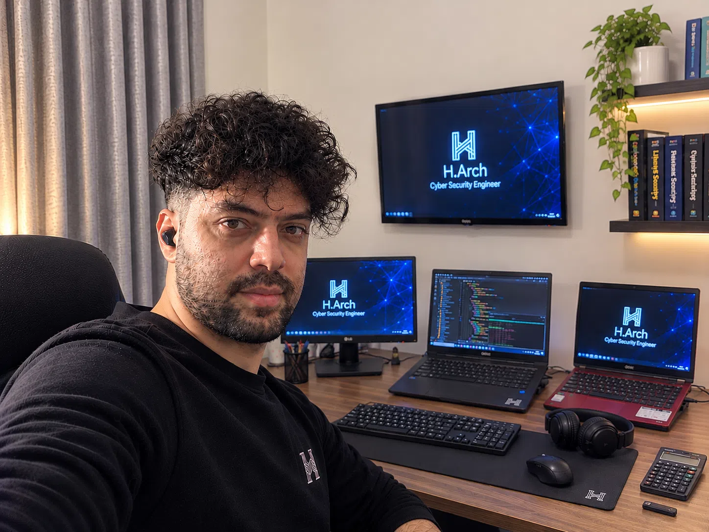

معماری
اعتماد دیجیتال.
من حامد هستم — یک مهندس امنیت سایبری که روی طراحی معماریهای امنیتی مقاوم و کاربردی تمرکز دارد. من ریسکهای پیچیده را به سیستمهای شفاف، تصمیمات قابل دفاع و حفاظت قابل اندازهگیری تبدیل میکنم.

امنیت یک معماری است،
نه یک چکلیست.
من به تیمها کمک میکنم تا از تفکر پیرامونی به سمت طراحی بدون اعتماد (Zero Trust) حرکت کنند — ترسیم مرزهای اعتماد قبل از نوشتن حتی یک کنترل.
در طول هشت سال گذشته به تیمهای فینتک، SaaS و زیرساخت کمک کردهام تا سیستمهایی طراحی کنند که در برابر شکست و حملات مقاومت کنند. کار من در تلاقی مدلسازی تهدید، معماری هویت و امنیت بومی ابری قرار دارد.
من معتقدم بهترین کنترل امنیتی آن است که مسیر ناامن را سختتر کند — بنابراین به همان اندازه که برای دفاع در عمق طراحی میکنم، برای ارگونومی توسعهدهنده نیز طراحی میکنم.
معماری بدون اعتماد (Zero Trust)
امنیت ابری (AWS/GCP/Azure)
مدلسازی تهدید و STRIDE
طراحی هویت و دسترسی
معماریهایی که
نفوذ را فرض میکنند.
منتخبی از پروژههای معماری امنیتی. برای مشاهده جزئیات طراحی روی هر کارت کلیک کنید.
مسیری تکرارپذیر
از ریسک تا تابآوری.
هر پروژه از یک چرخه چهار مرحلهای یکسان پیروی میکند — طراحی شده برای تولید آرتیفکتهای ماندگار، نه اسلاید.
مدلسازی
ترسیم داراییها، مرزهای اعتماد و جریان دادهها قبل از طراحی کنترلها.
تهدیدشناسی
شمارش تهدیدها با STRIDE و ATT&CK؛ رتبهبندی بر اساس قابلیت بهرهبرداری.
طراحی
انتخاب کنترلهایی که مسیر ناامن را سختتر میکنند.
اعتبارسنجی
خودکارسازی تشخیص و تست مجدد مداوم، نه یک بار در سال.
بیایید اعتماد بسازیم.
آماده همکاری در پروژههای معماری امنیت و مشاوره.